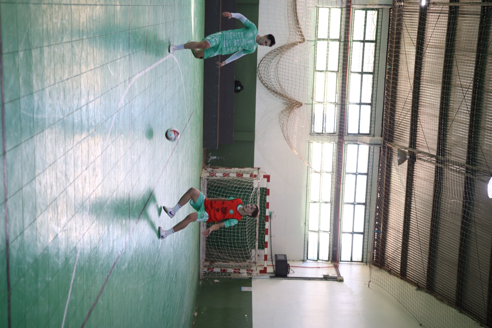
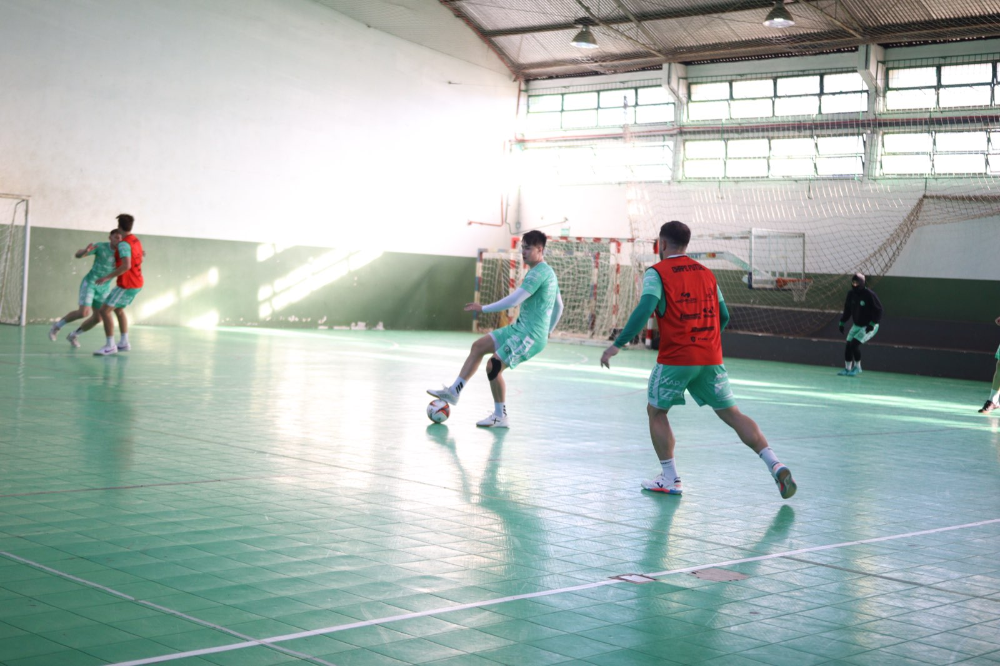
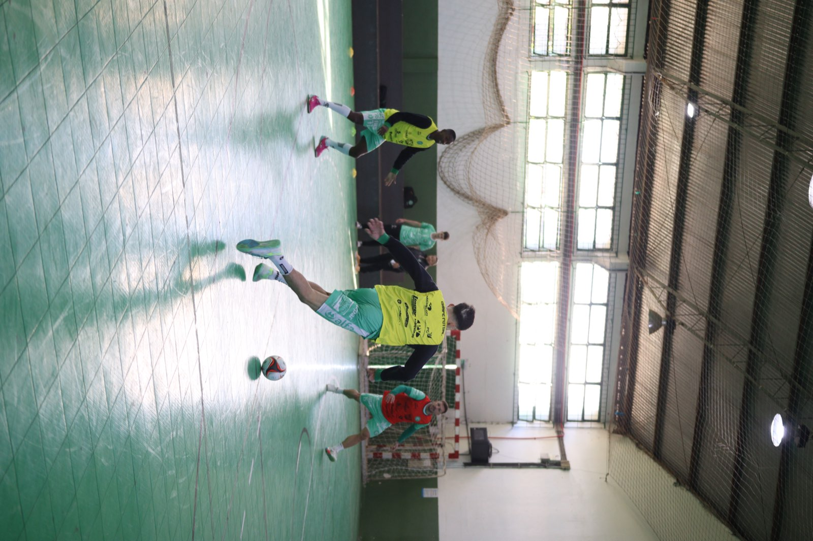

A Prefeitura de Chapecó/Chapecoense/Unochapecó tem importante compromisso pela Série Ouro da Federação Catarinense de Futsal. Neste sábado (15/8), o Verdão das Quadras encara a Apaff/Floripa, às 17h, no Ginásio Plínio Arlindo De Nes/SER Aurora, em Chapecó, por partida antecipada da nona rodada da primeira fase. A missão é vencer para continuar na liderança da competição.

O time do técnico Leo Schroeder soma 13 pontos e aparece em primeiro lugar. Porém, quando o árbitro trilar o apito, a equipe verde-branca estará na vice-liderança. Isso porque Pouso Redondo (2º, com 13) e São Lourenço (4º, com 11) se enfrentam nesta sexta-feira (14), às 19h30, no Alto Vale do Itajaí, e um dos dois assumirá a dianteira da tabela, provisoriamente. Mas, o triunfo em casa, neste sábado, recoloca a Chape Futsal na ponta da classificação.
"Temos um jogo muito importante, diante de uma grande equipe, que na Copa Santa Catarina conseguiu um empate (3 a 3) aqui contra nós. Então, a gente sabe da dificuldade que vai ser este jogo. Estamos nos preparando bem para essa partida e temos certeza que vamos fazer uma grande atuação diante do nosso torcedor. É um jogo de seis pontos, porque podemos nos afastar da equipe de Floripa na tabela e, quem sabe, carimbar uma classificação antecipada para a próxima fase. O nosso objetivo é manter a liderança", disse Leo. Floripa tem 9 pontos e fecha o G8.

Venda de ingressos
Os ingressos podem ser comprados antecipadamente. A venda ocorre nos seguintes locais: Loja Oficial da Chape Futsal (na rua Paulo Marques, entre as avenidas Fernando Machado e Porto Alegre, anexo à Classic Uniformes), Loja iXap Sports (na avenida Getúlio Vargas, entre as ruas Paulo Marques e Vitório Cella) e site ingressojogo.com.br. Também haverá bilhetes na hora, no ginásio.
Os tickets são divididos por lotes. No primeiro, a entrada sai por R$ 20,00, e no segundo, R$ 25,00. O meio-ingresso custa R$ 10,00 e vale para as pessoas com direito garantido por lei. Crianças até 12 anos entram de graça, sem necessidade de retirar cortesia, mas precisam estar acompanhadas por um responsável e portando documento de identificação.

Você pode ser sócio
Há planos disponíveis para associação. Os interessados devem entrar em contato pelo WhatsApp (49) 99975-1964. O torcedor adquire uma camisa oficial da equipe por R$ 300,00, valor que pode ser parcelado em até cinco vezes no cartão, e ganha uma carteirinha para assistir a todos os jogos em casa nesta temporada. No ginásio, em dias de jogos, também é possível se tornar sócio.
Crédito das fotos: @rogersilva_fotografia/@achapefutsal